Manual de usuario — VendeDTo
Versión: 1.1 · Fecha: 2026-10-16 Dirigido a: el Dueño (Administrador de tienda) y sus Empleados (Usuario de tienda).
Cómo leerlo. La Parte 1 es la puesta en marcha: se hace una vez, cuando montas la tienda. Las Partes 2 a 6 son el uso del día a día. Cada sección termina con una Imagen sugerida: la captura del POS que conviene poner y qué debe mostrar.
Antes de empezar: cómo funciona el sistema
- Dos roles importan aquí. El Dueño (Administrador de tienda) monta y configura todo. El Empleado (Usuario de tienda) opera: vende, cobra, registra. Hay funciones que solo ve el Dueño (configurar el catálogo web, los pedidos de WhatsApp, los empleados…).
- Funciona sin conexión. Salvo el Catálogo Web y los Pedidos WhatsApp, que van contra el servidor, casi todo el POS trabaja con los datos guardados en el propio dispositivo. Por eso conviene instalar la app en el equipo y activarle el acceso sin conexión (Parte 1, paso 7).
- Los módulos activan funciones. La tienda tiene un plan, y según los módulos activos aparecen unas pantallas u otras (multi-moneda, créditos, gastos, multi-tienda, catálogo web, pedidos de WhatsApp…). Si en tu menú no ves un apartado, es que esa función no está activa.
- Un dato vive en la tienda seleccionada. Todo lo que registras (ventas, inventario, gastos…) pertenece a la tienda que tienes seleccionada en ese momento.
- El carrito es global. El ícono del carrito vive en el encabezado de la app y se comparte entre las pantallas de venta: armas la venta y la confirmas desde ahí (Parte 2).
El menú (barra lateral)
Aquí viven todas las vistas. Se abre con la doble flecha del encabezado y se cierra con la
doble flecha de su propio encabezado. Está agrupado por bloques (VENTA, CATÁLOGO WEB,
INVENTARIO, GASTOS, SINCRONIZACIÓN, REPORTES, ESTADÍSTICAS, GESTIÓN), y
cada opción lleva un ? que abre la ayuda de esa vista.
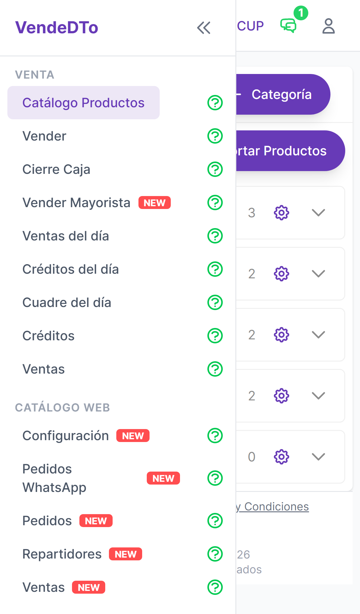

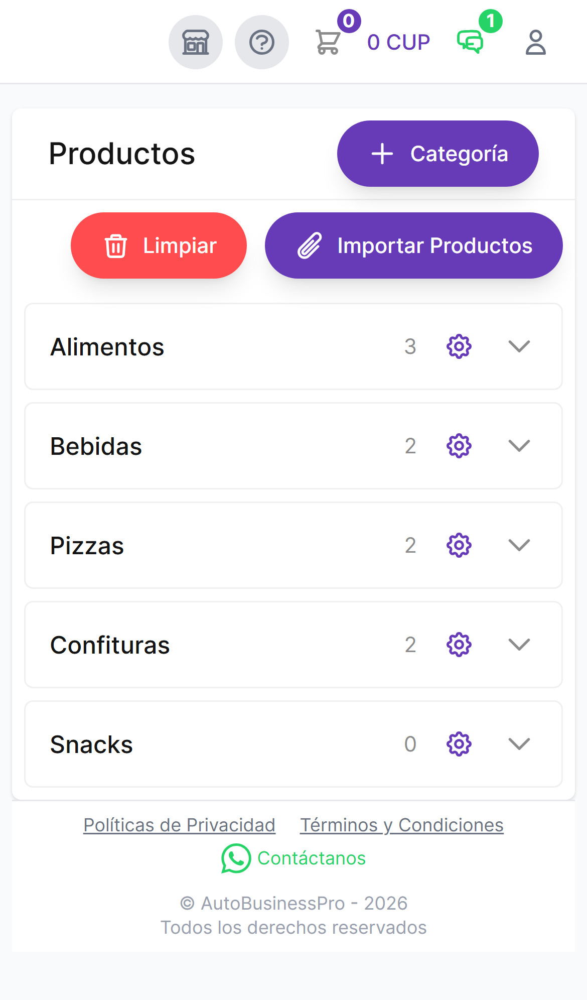
El encabezado (barra superior)
De izquierda a derecha:
- Doble flecha — abre la barra lateral de menú cuando está cerrada.
- Tienda — cambiar de tienda (solo el Dueño, y solo si tiene más de una tienda).
- Signo de interrogación — abre el Tutorial (la ayuda de la app); al pulsarlo de nuevo, vuelve a la vista donde estabas.
- Carrito — la venta en curso: cuántos artículos llevas (el número) y el total al lado. Se usa desde cualquier pantalla de venta.
- Burbuja de chat (verde) — el chat de soporte con el administrador de la plataforma; el número indica mensajes sin leer.
- Campana — avisos de la plataforma (solo para la administración).
- Persona — menú de usuario: tu usuario y tu nombre, y las opciones Editar Perfil, Cambiar Contraseña y Salir.
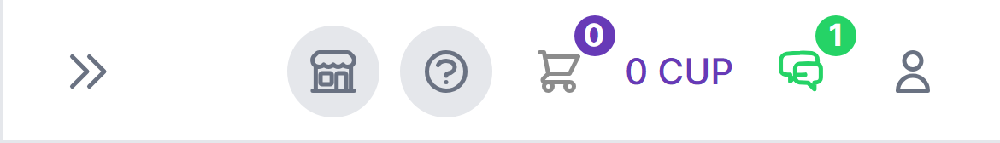
El pie de página
- Políticas de Privacidad y Términos y Condiciones — los documentos legales (abren en una pestaña nueva).
- Contáctanos — abre un chat de WhatsApp con el soporte. Solo aparece con la sesión iniciada (en la pantalla de acceso no se muestra).
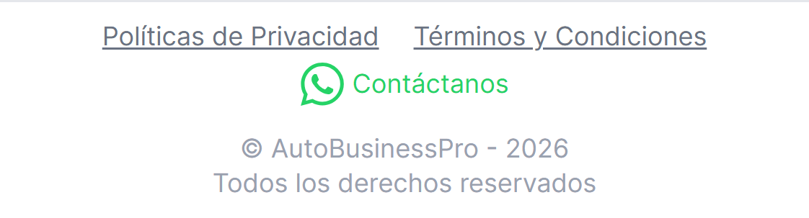
Parte 1 — Puesta en marcha (el Dueño, una sola vez)
1. Crear la cuenta e instalar la app
Qué es. El alta del propietario: crea tu cuenta y tu primera tienda a la vez, y deja el POS instalado en el dispositivo.
Cómo se hace.
- Entra en la pantalla de Creación de cuenta.
- Rellena: Nombre completo, Nombre de la tienda, Usuario, Contraseña, Confirmar contraseña, Teléfono celular y Email (el único opcional).
- La contraseña debe tener al menos 8 caracteres, una mayúscula y un número.
- Marca la casilla de términos y condiciones (hay un enlace para leerlos).
- Pulsa Registrar. La cuenta se crea, entra automáticamente y te lleva a tu página de inicio (el catálogo Productos, todavía vacío porque aún no has cargado nada).
- Instala la app en el dispositivo. En tu página de inicio verás el botón flotante INSTALAR APP: púlsalo. El dispositivo añade el ícono de la app automáticamente; espera a verlo aparecer en la pantalla de inicio (o en el escritorio) y abre la app desde ahí a partir de ahora — así trabaja sin conexión. Cuando la app queda instalada, el botón desaparece (ya no hace falta).
A tener en cuenta. Todo es obligatorio salvo el email. Si el alta se interrumpe justo al final, la cuenta ya puede existir: se te avisa y se te lleva a la pantalla de acceso.
📷 Imagen sugerida.
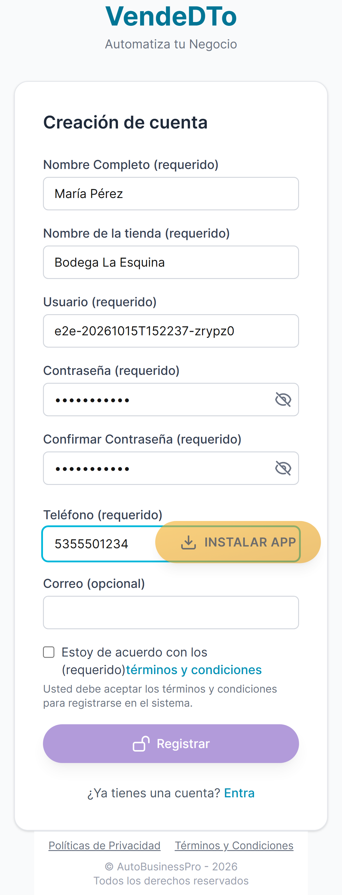
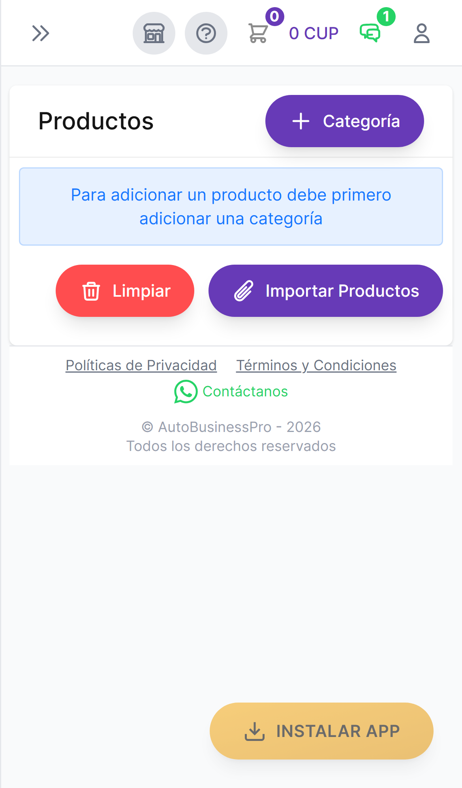
2. Primer acceso
Qué es. Entrar con usuario y contraseña y llegar a la pantalla de inicio.
Cómo se hace.
- En Inicia sesión en tu cuenta, escribe Usuario y Contraseña (el ojo muestra u oculta la contraseña).
- Pulsa Iniciar sesión. Verás un aviso de carga mientras se resuelve tu sesión.
- Aterrizas en tu pantalla de inicio: la venta si la tienda ya tiene productos vendibles, o el catálogo de productos si aún no.
A tener en cuenta. Si la cuenta está desactivada, o fallas muchas veces seguidas, se te avisa con un mensaje claro. Una sesión ya iniciada que vuelve a la pantalla de acceso se redirige sola a su inicio.
📷 Imagen sugerida.
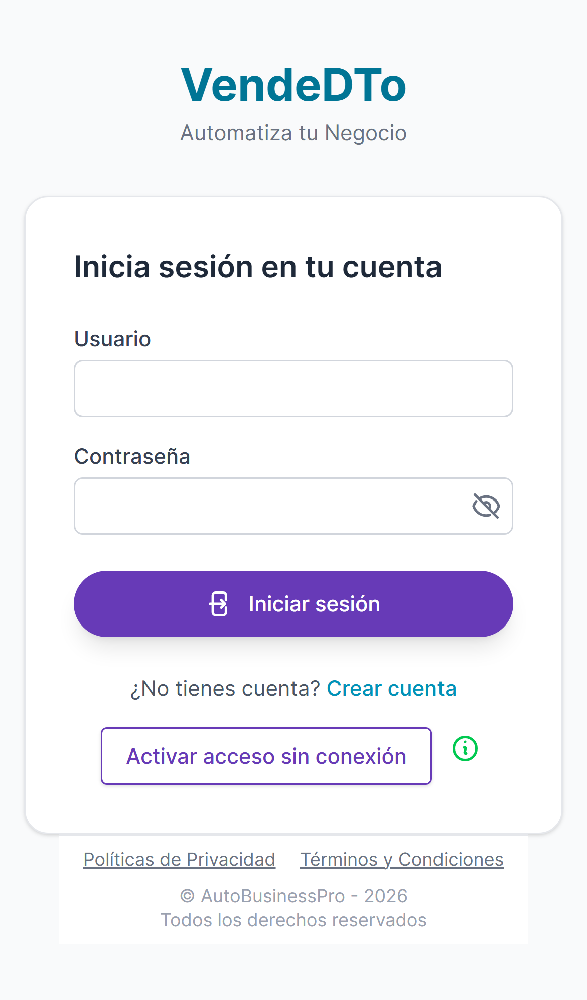
3. Configurar la tienda (monedas, métodos de pago y tasas)
Qué es. Dejar lista la forma de cobrar antes de vender: con qué monedas trabajas, qué métodos aceptas y a qué tasa cambias.
Cómo se hace.
- Ve a Gestión → Configuraciones.
- (Solo multi-tienda) En Tienda activa, elige la tienda que vas a configurar.
- (Solo con el módulo de múltiples monedas) En Monedas de compra y venta elige la Moneda de Compra y la Moneda de Venta.
- En Métodos de pago, activa o desactiva los métodos con su interruptor. Los canales en Efectivo están siempre activos y su interruptor no se puede apagar.
- (Solo con el módulo de múltiples monedas) Si necesitas cambiar valores, ve a Tasas de Cambio (ver la sección 30) y registra la tasa de cada moneda por método de pago.
A tener en cuenta. El catálogo de categorías de producto no está aquí: se gestiona en Productos. Esta pantalla guarda al instante (verás Guardado).
📷 Imagen sugerida.
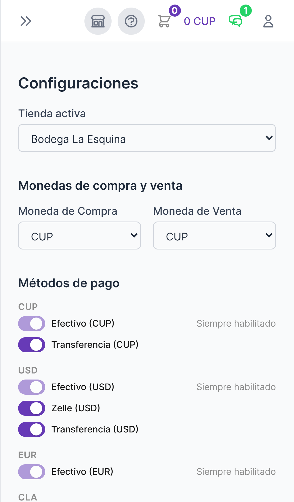
4. Cargar el catálogo de productos
Qué es. Dar de alta tus productos y organizarlos por categorías. Es la base de todo: sin productos no se puede vender.
Cómo se hace.
- Ve a Ventas → Catálogo Productos (título de la tarjeta: Productos).
- Crea una categoría con el botón Categoría de la cabecera.
- Con el engranaje de la categoría, añade productos: Productos para un alta rápida de varios, o Producto para un alta individual.
- En el formulario del producto rellena Nombre, Precio (y su moneda si tienes varias), Cantidad, Orden, y marca Activo, Disponible para Vender y, si corresponde, Descuenta del Inventario. Puedes añadir Código de barras y la configuración mayorista.
- Para cargas grandes, usa Importar Productos (CSV): descarga el ejemplo, rellénalo y súbelo.
A tener en cuenta. Si registras un producto con costo y cantidad, se crea además una entrada de inventario del día. Desactivar un producto no lo borra: queda listado y atenuado como inactivo, y puede reactivarse.
📷 Imagen sugerida.
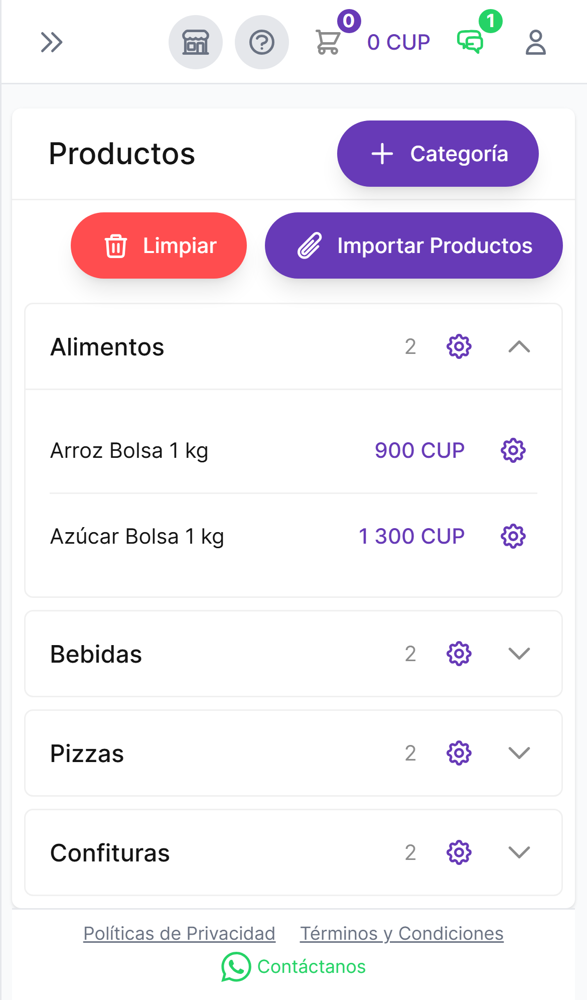
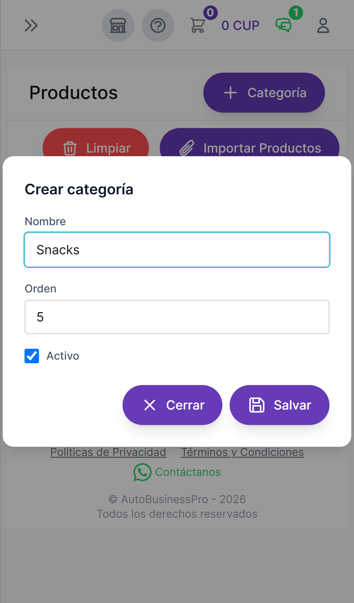
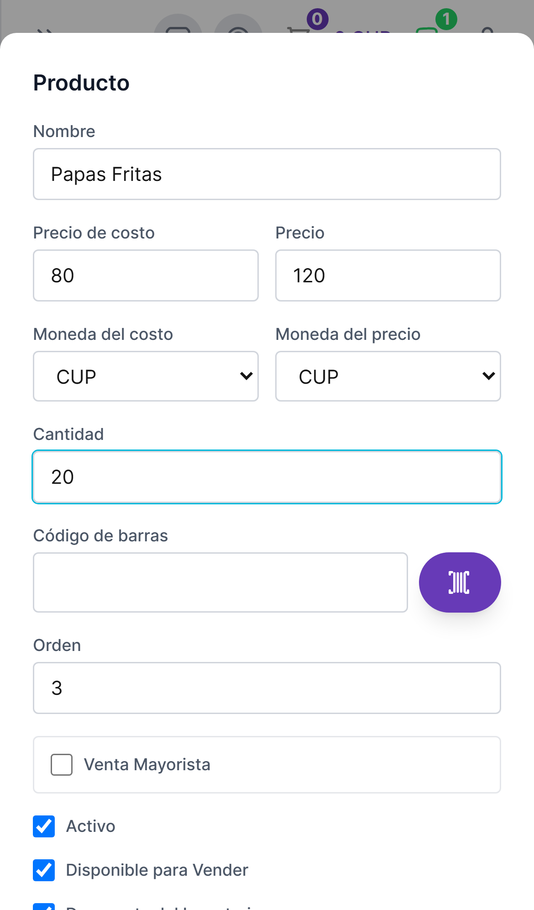
5. Registrar las primeras entradas de inventario
Qué es. Meter el stock inicial de los productos.
Cómo se hace.
- Ve a Inventario → Entradas del día.
- Pulsa Entrada, elige el producto, la cantidad y el costo, y guarda.
- Repite por cada producto que tenga existencias.
A tener en cuenta. La fecha la pone el sistema (es del día): no se puede registrar una entrada con fecha pasada. Corregir el costo de una entrada se propaga a las ventas ya hechas de ese producto.
📷 Imagen sugerida.
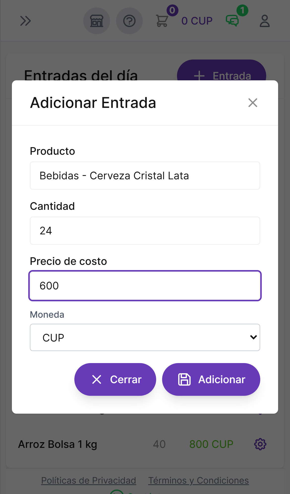
6. Crear los empleados y sus roles
Qué es. Dar de alta a la gente que usará el POS y decidir qué puede hacer cada uno.
Cómo se hace.
- Ve a Gestión → Usuarios (título: Empleados).
- Pulsa Crear y rellena los datos del empleado.
- Asígnale su rol y las funcionalidades que puede usar.
- Con las tarjetas de cada empleado puedes Editar, Activar o Desactivar.
A tener en cuenta. Esta pantalla necesita conexión. Los datos del empleado pertenecen a la tienda que tengas seleccionada.
📷 Imagen sugerida.
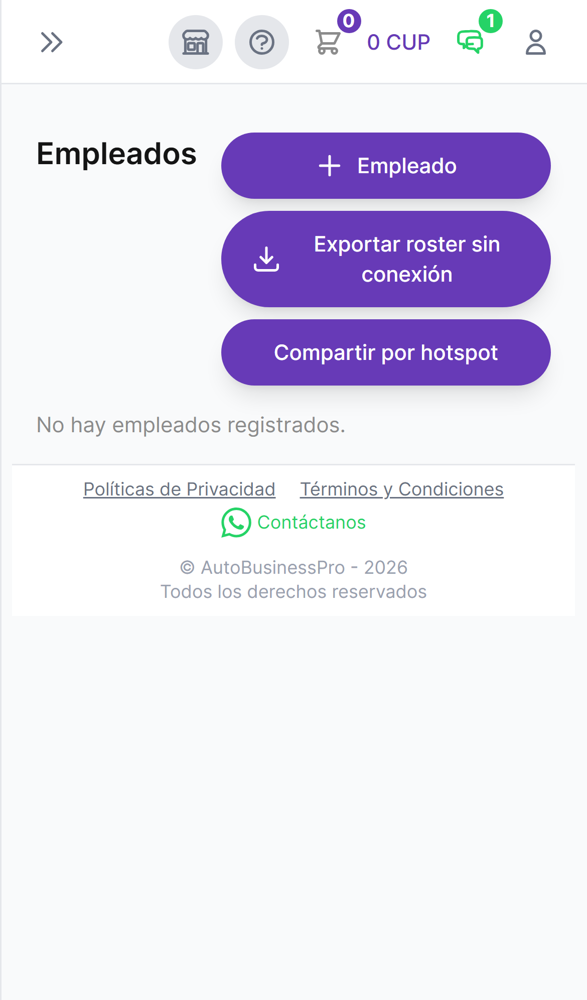
7. Activar el acceso sin conexión en los equipos
Qué es. Preparar un equipo para que el empleado pueda entrar y trabajar sin internet. Esto se hace con el roster (la lista de empleados con contraseña).
Cómo se hace.
- En el equipo del Dueño, ve a Gestión → Usuarios y pulsa Exportar roster; ponle una contraseña maestra y confirma. Obtienes un archivo de activación.
- Lleva ese archivo al equipo del empleado (por ejemplo con Compartir por hotspot).
- En el equipo de destino, abre el Acceso sin conexión en la pantalla de acceso, elige el Archivo de activación y escribe la Contraseña de activación, y pulsa Activar.
- Desde entonces, ese equipo puede iniciar sesión aunque no haya internet.
A tener en cuenta. Para desactivar el acceso sin conexión se pide confirmación; si el dispositivo tiene datos cifrados y no hay otra copia de la clave, se te avisa del riesgo de pérdida.
📷 Imagen sugerida. El panel de Acceso sin conexión abierto con sus dos opciones (Activar / Desactivar) y, si se puede, el modal de activación con el archivo y la contraseña.
Parte 2 — El día a día del empleado
8. Vender
Qué es. Armar una venta normal y confirmarla.
Cómo se hace.
- Ve a Ventas → Vender (Productos para vender).
- Encuentra el producto: escríbelo en el buscador, usa el escáner de código de barras, o navega por categorías (el interruptor Todos muestra todas).
- En la fila del producto, indica la Cantidad y pulsa Añadir. La disponibilidad aparece entre paréntesis junto al nombre.
- Repite con el resto de líneas. El carrito (ícono del encabezado) va sumando.
- Abre el carrito, revisa la Venta actual y pulsa Registrar.
A tener en cuenta. Si un producto descuenta del inventario y no hay stock suficiente, el sistema te lo dice antes de dejarlo añadir. Tras registrar, las cantidades se refrescan solas.
📷 Imagen sugerida.
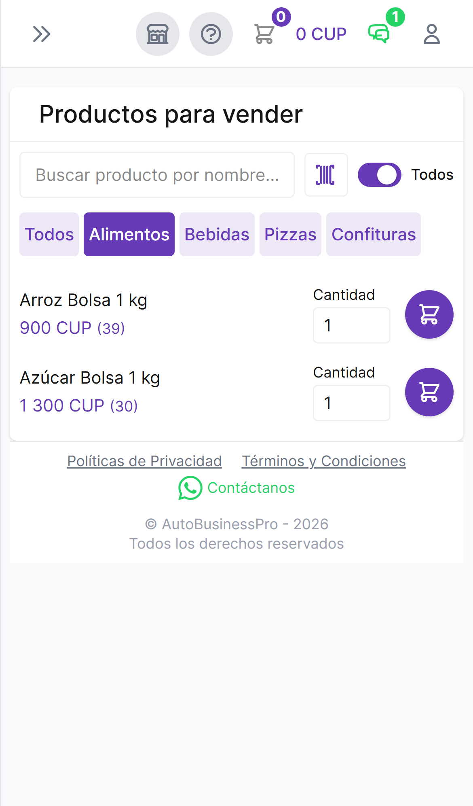
9. Cobrar (método de pago, crédito y vuelto)
Qué es. Elegir cómo paga el cliente y confirmar la venta desde el carrito.
Cómo se hace.
- Abre el carrito.
- Elige la moneda de la venta (si tienes varias).
- Elige el método de pago (Efectivo, Transferencia, Zelle…).
- En efectivo, escribe con cuánto paga y la app calcula el Vuelto.
- Si la venta es a crédito, activa el interruptor Crédito y escribe el Cliente.
- Pulsa Registrar.
A tener en cuenta. No se puede registrar un carrito vacío, ni cobrar menos que el total, ni dejar un crédito sin cliente. No se pueden mezclar ventas normales y mayoristas en el mismo carrito.
📷 Imagen sugerida.
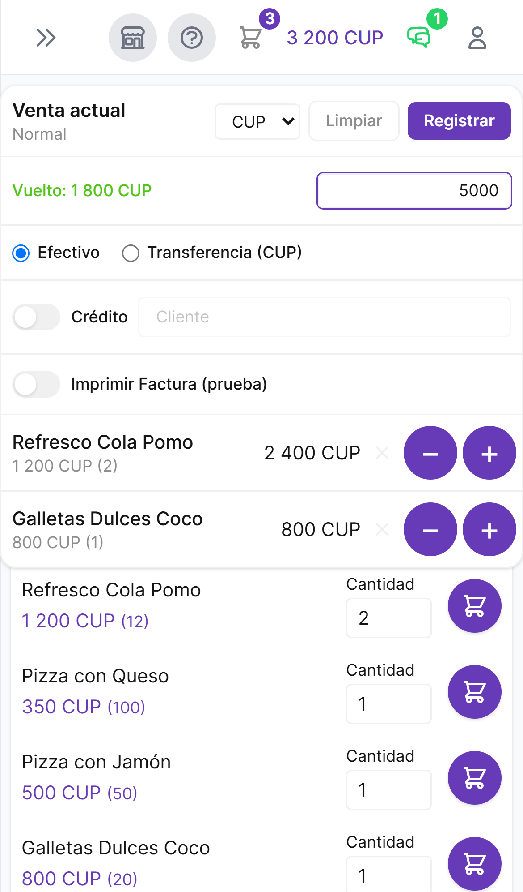
10. Vender al mayor (por paquetes)
Qué es. Vender por paquetes, con precio por unidad según el tamaño de la compra.
Cómo se hace.
- Ve a Ventas → Vender Mayorista.
- Busca o escanea el producto; pulsa el ? de la fila para ver los rangos de precio.
- Escribe la cantidad de paquetes (el mínimo es el primero del rango) y añade.
- La fila muestra la cotización (paquetes × tamaño × precio = total).
- Confirma desde el carrito igual que una venta normal.
A tener en cuenta. Solo aparecen los productos configurados como mayoristas. En el carrito, + y − mueven paquetes (no unidades), y bajar por debajo del primer rango elimina la línea.
📷 Imagen sugerida.
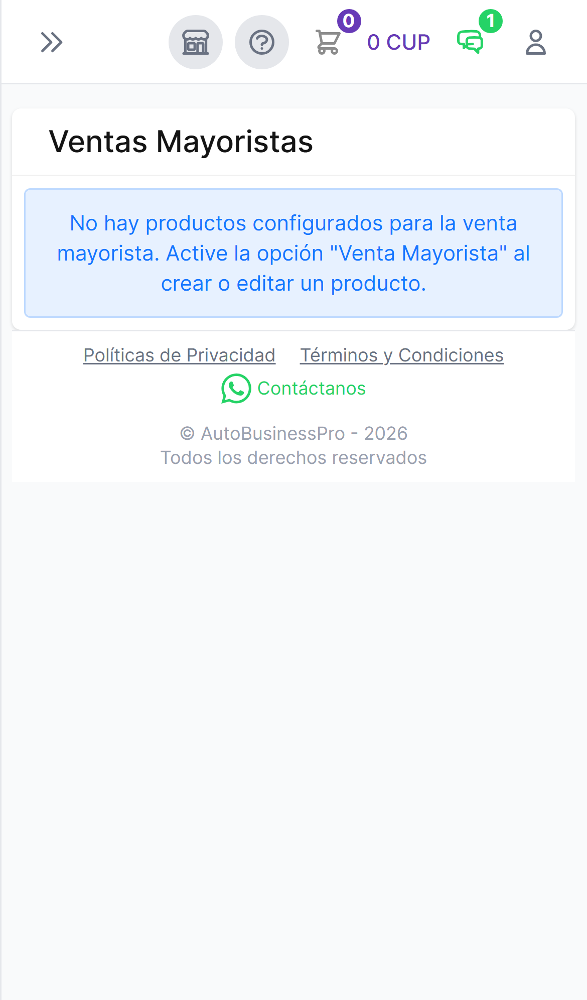
11. Cobrar un crédito
Qué es. Marcar como pagada una venta que se dejó a crédito.
Cómo se hace.
- Ve a Ventas → Créditos de hoy (o al Historial de créditos para días anteriores).
- Localiza al cliente en la lista.
- Pulsa Pagar en la fila del crédito y confirma.
A tener en cuenta. En el historial (Créditos), el filtro arranca en Por Pagar. Puedes filtrar por rango de fechas y por estado (Todos / Por Pagar / Pagados).
📷 Imagen sugerida.
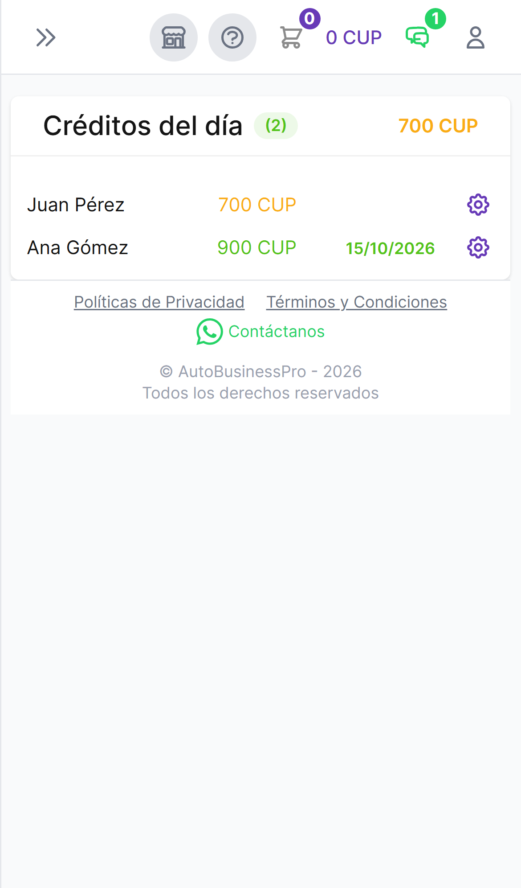
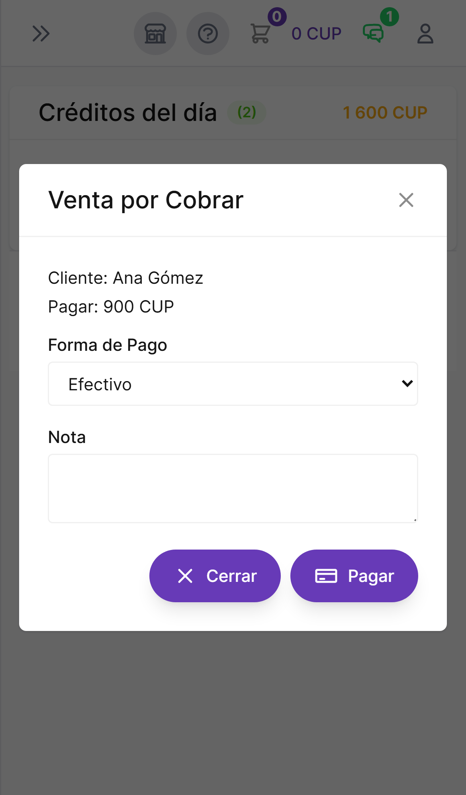
12. Cierre de caja
Qué es. Cuadrar el efectivo del día y cerrar la caja: la apertura, el conteo por denominaciones y la diferencia.
Cómo se hace.
- Ve a Ventas → Cierre Caja (Cierre Efectivo).
- Escribe el valor de la Apertura (el efectivo con el que arranca la caja).
- En la tarjeta Conteo, escribe cuántos billetes/monedas hay de cada denominación. Si necesitas una denominación que no está, usa Nueva denominación y Agregar.
- Revisa las tarjetas Esperado, Contado y Diferencia (roja si falta, verde si sobra).
- Pulsa Cerrar Caja y confirma. Si la Diferencia no es cero, el Comentario es obligatorio.
A tener en cuenta. Cuadra solo el efectivo (no transferencias ni Zelle). Mientras el día está Abierta puedes seguir llenándolo; al cerrar, todo queda bloqueado. Si tienes varias monedas, hay un registro por día y moneda (usa el filtro de moneda).
📷 Imagen sugerida.
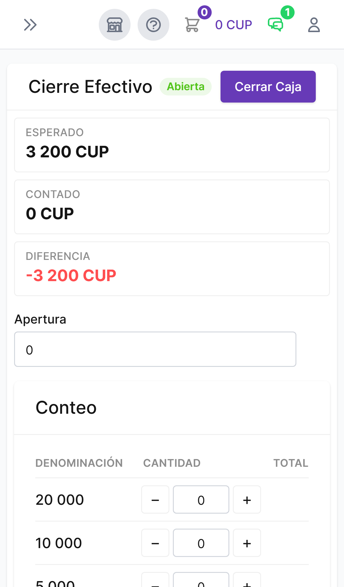
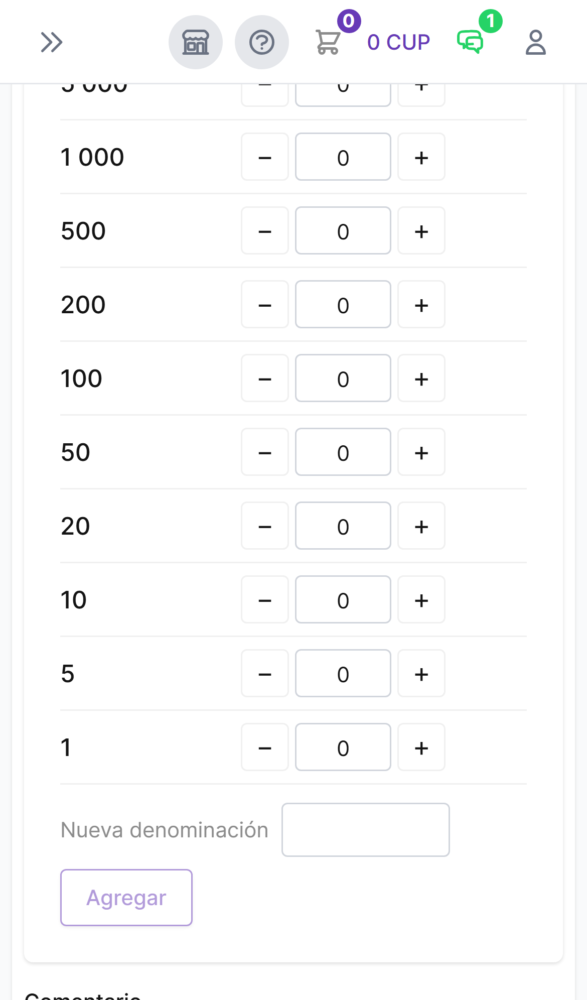
13. Ver tus ventas y el cuadre del día
Qué es. Consultar lo vendido hoy y cómo va la caja.
Cómo se hace.
- Ventas del día (Ventas → Pedidos de hoy): lista de las ventas de hoy con filtro por método de pago, por estado (Todas / Pagadas / Créditos) y por moneda. Desde el engranaje de una venta puedes Editar o Eliminar/Cancelar.
- Cuadre del día (Ventas → Cuadre del día): paneles colapsables con Resumen Efectivo (ventas en efectivo + créditos pagados − gastos), Pago por Transferencia, Gastos, Créditos por cobrar, Créditos pagados y Ventas por categoría.
A tener en cuenta. El Cuadre del día es una foto de control; el cierre formal del efectivo es la sección 12.
📷 Imagen sugerida.
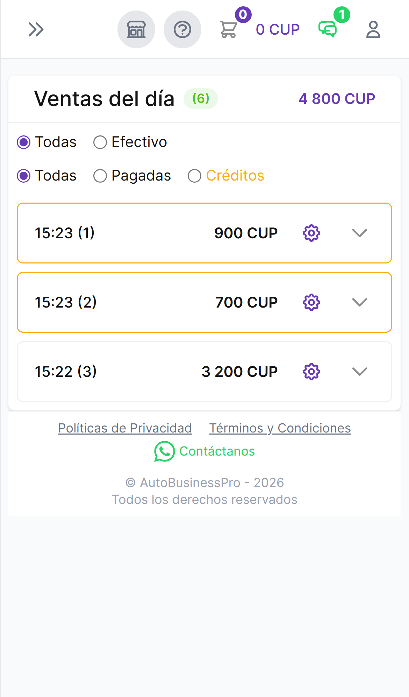
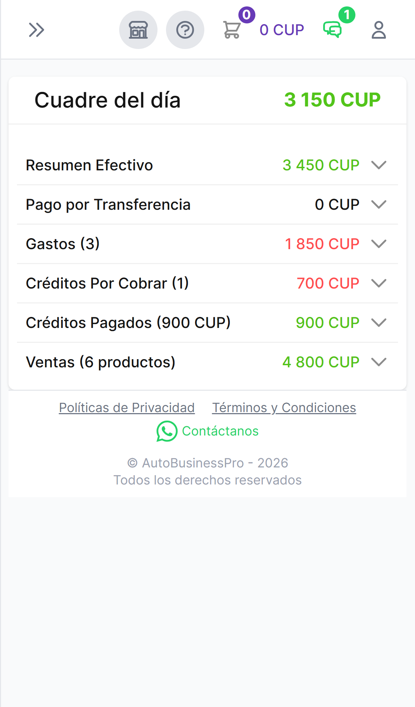
Parte 3 — Inventario
El inventario de la tienda es local: se consulta sin conexión y refleja lo que se ha registrado en el dispositivo.
14. Inventario disponible
Qué es. Consultar el stock por categoría y producto, su costo y su valor.
Cómo se hace.
- Ve a Inventario → Disponible (título: Inventario). Verás las categorías colapsadas.
- Expande la categoría y revisa cada producto: nombre, cantidad del sistema entre paréntesis, costo unitario y valor total.
- Usa el buscador (Buscar producto) para localizar uno.
A tener en cuenta. El conteo no está en esta vista: tiene la suya propia (la siguiente).
📷 Imagen sugerida.
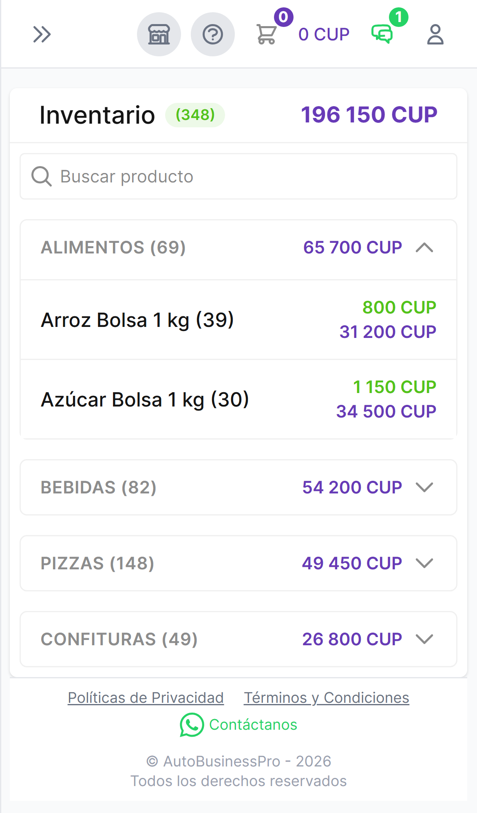
14.1 Conteo de productos
Qué es. La vista de conteo: recorrer los productos, escribir lo que hay realmente y ver la diferencia contra el sistema. Es solo de conteo y no ajusta el stock.
Cómo se hace.
- Ve a Inventario → Conteo de productos (título Conteo de productos con el número de productos).
- Expande una categoría (paneles colapsables, como en las otras vistas).
- En cada producto verás el número de fila, el nombre y Sistema: N. Escribe lo contado en Conteo.
- La diferencia (contada − sistema) se resalta: negativa con signo
-en rojo; cero o positiva en verde con+. Sin escribir nada, muestra—. - Para empezar de cero, pulsa Limpiar: borra todos los conteos y deja la vista en blanco.
A tener en cuenta. Es solo visual: no guarda nada (ni en el dispositivo) y no modifica el stock. Si recargas o sales de la vista, los conteos se pierden.
📷 Imagen sugerida.
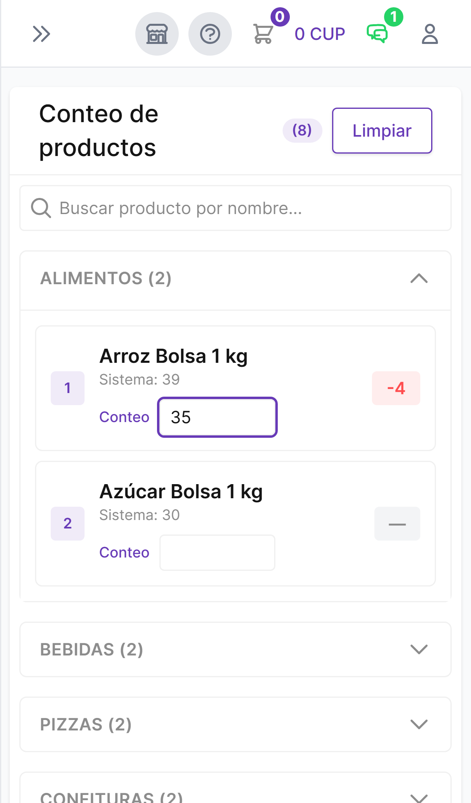
15. Entradas: del día e historial
Qué es. Registrar y consultar las entradas de mercancía.
Cómo se hace.
- Entradas del día (Inventario → Entradas del día): pulsa Entrada, elige producto, cantidad y costo, y guarda. Con el menú de la fila puedes Editar o Eliminar.
- Historial (Inventario → Historial de entradas, título Entradas): consulta por rango de fechas, agrupado por día. Es solo lectura.
A tener en cuenta. Solo el Dueño ve la columna de costo y las acciones del día. Una entrada que ya se vendió no se puede anular. La fecha siempre es la del día.
📷 Imagen sugerida.
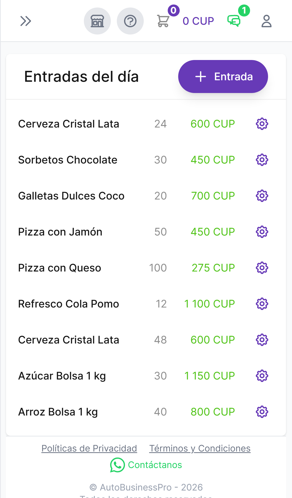
16. Cantidades del día
Qué es. Reconciliar, por producto, cómo se movió el inventario hoy.
Cómo se hace.
- Ve a Inventario → Cantidades del día.
- Revisa la tabla por producto: Inicio · Entradas · Disponible · Vendido · Final.
A tener en cuenta. Es solo lectura, sin filtros. Los valores negativos y los movimientos se resaltan con color para que salten a la vista.
📷 Imagen sugerida.
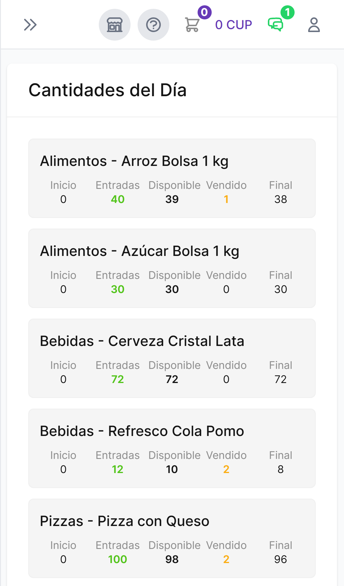
17. Ganancias del día
Qué es. El margen real del día: a qué precio se vendió y a qué costo.
Cómo se hace.
- Ve a Inventario → Ganancias del día.
- Revisa por producto el Vendido, Precio, Costo y la Ganancia, con el Total abajo.
A tener en cuenta. El costo sale del desglose grabado en el momento de la venta (no se recalcula). La ganancia total se pinta en verde si es positiva y en rojo si es negativa.
📷 Imagen sugerida.
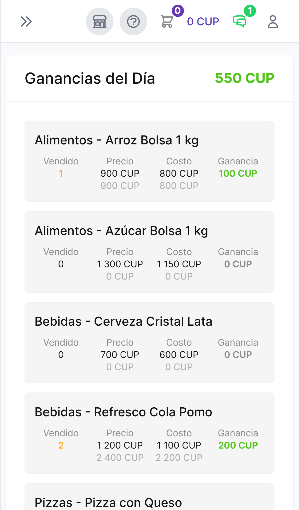
18. Salida
Qué es. La pantalla Salida abre la venta con un selector de tipo de pedido (por defecto Mayorista) sobre las categorías de productos. Comparte el carrito de la venta.
Cómo se hace.
- Ve a Inventario → Salida.
- Elige el tipo en el selector de la esquina superior, navega por categorías y añade lo que corresponda.
- Confirma desde el carrito, igual que cualquier venta.
A tener en cuenta. La etiqueta del menú invita a pensar en mermas o salidas no de venta, pero la pantalla funciona como una venta con tipo de pedido seleccionable. Confirmar con el Dueño si el uso previsto es ese antes de documentarlo con más detalle.
📷 Imagen sugerida. La pantalla Salida con el selector de tipo arriba y una categoría con sus productos.
Parte 4 — Catálogo Web y Pedidos WhatsApp
A diferencia del resto del POS, estas pantallas necesitan internet: el catálogo publicado y los pedidos viven en el servidor.
19. Catálogo Web: publicar y presentación
Qué es. Publicar tu catálogo en internet para que tus clientes lo vean, y darle tu marca.
Cómo se hace.
- Ve a Ventas → Configuración (Catálogo Web). Solo lo ve el Dueño.
- Pulsa Sincronizar Catálogo: se publican tus categorías y productos (creados, actualizados y los desactivados). Verás el resultado de la sincronización.
- Copia la dirección pública (botón Copiar) o ábrela con Ver catálogo para compartirla.
- En la tarjeta Marca: sube tu Logo y elige Productos por fila en móvil (uno o dos). Pulsa Guardar marca.
- En Carrusel e Imágenes del día: Elegir imágenes (hasta 10), opcionalmente un Pie de foto, y Subir imágenes. Puedes reordenar (subir/bajar) o quitar cada una.
A tener en cuenta. Editar un producto no lo republica: publicar es el acto explícito de Sincronizar Catálogo. El logo del banner ya no se edita aquí. Los contadores de la cabecera te dicen cuántas categorías, productos, publicados y sin imagen tienes.
📷 Imagen sugerida.
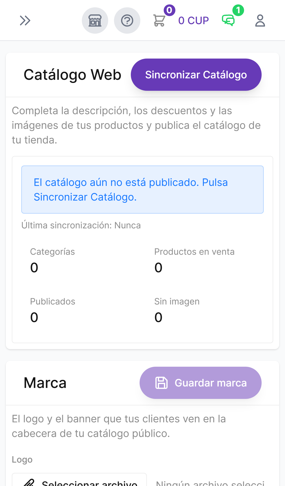
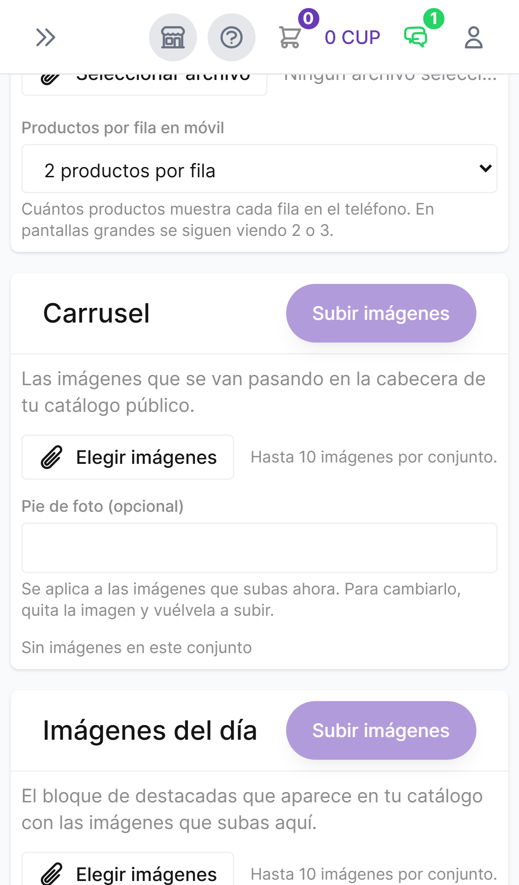
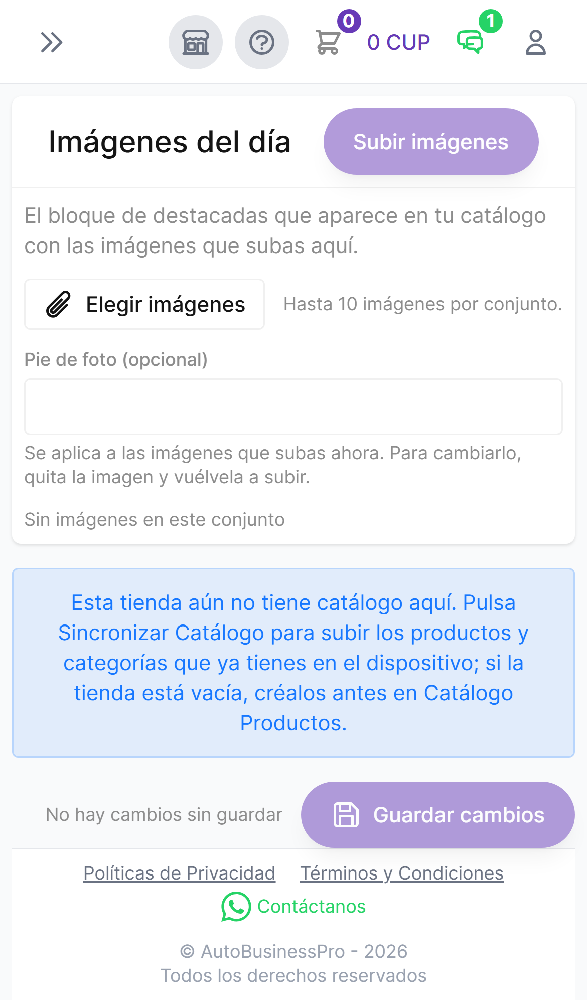
Así lo ve el cliente (ejemplo real del catálogo publicado):
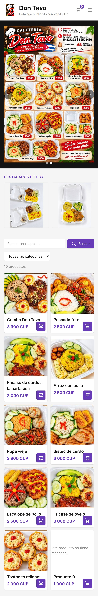
Cada producto se abre en una ficha con su foto, su precio y el botón Añadir:
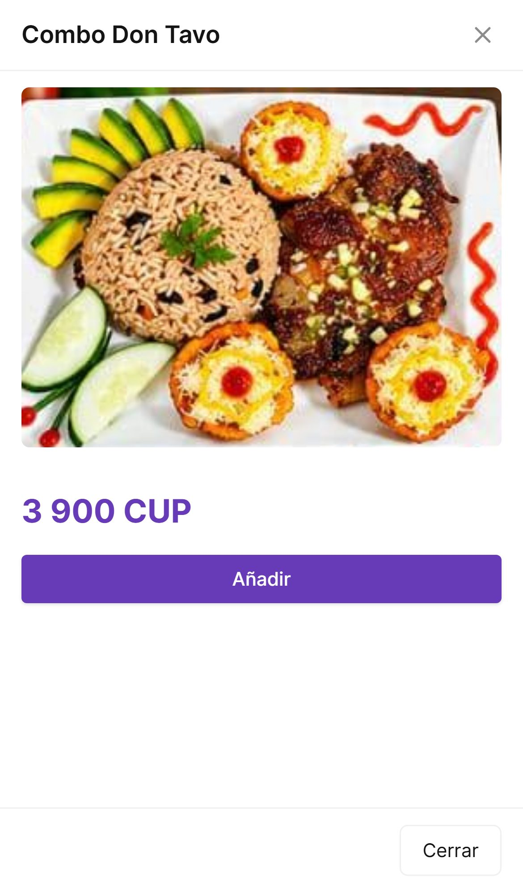
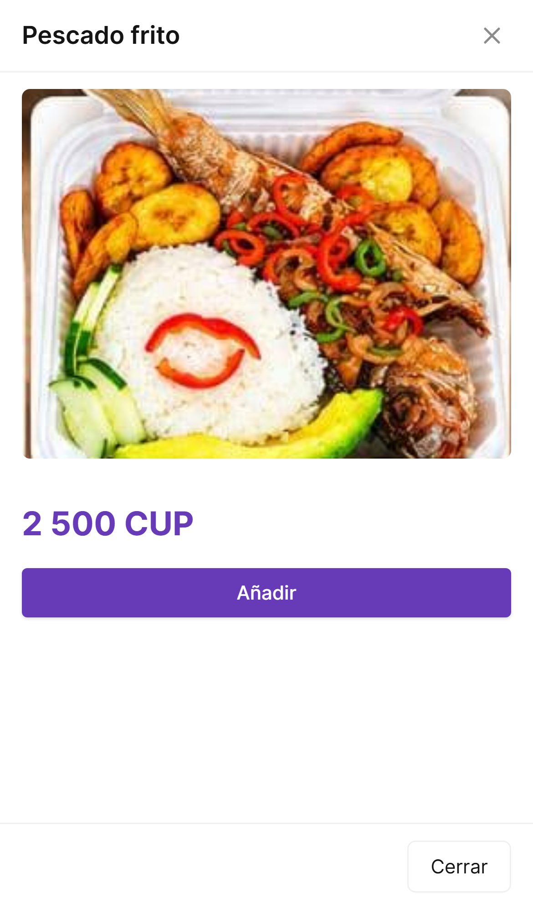
Y así pide: el carrito y el checkout los ve el cliente, no el POS. El ejemplo sigue un pedido de dos productos (el primero con dos unidades), y el checkout llega al final con los datos del cliente ya escritos:
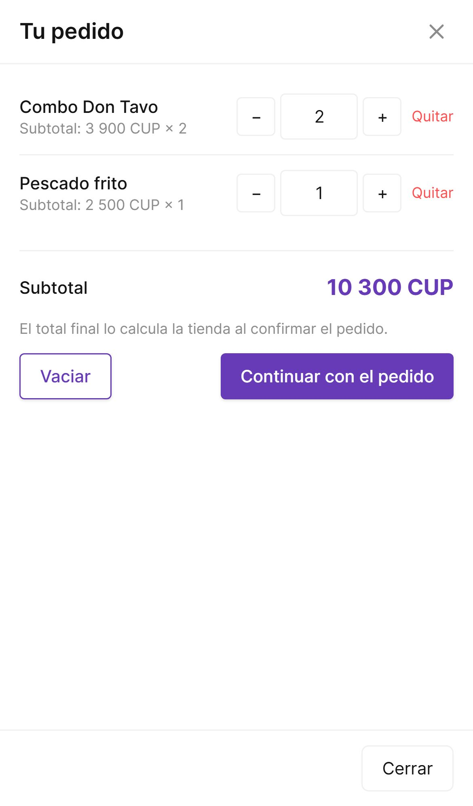
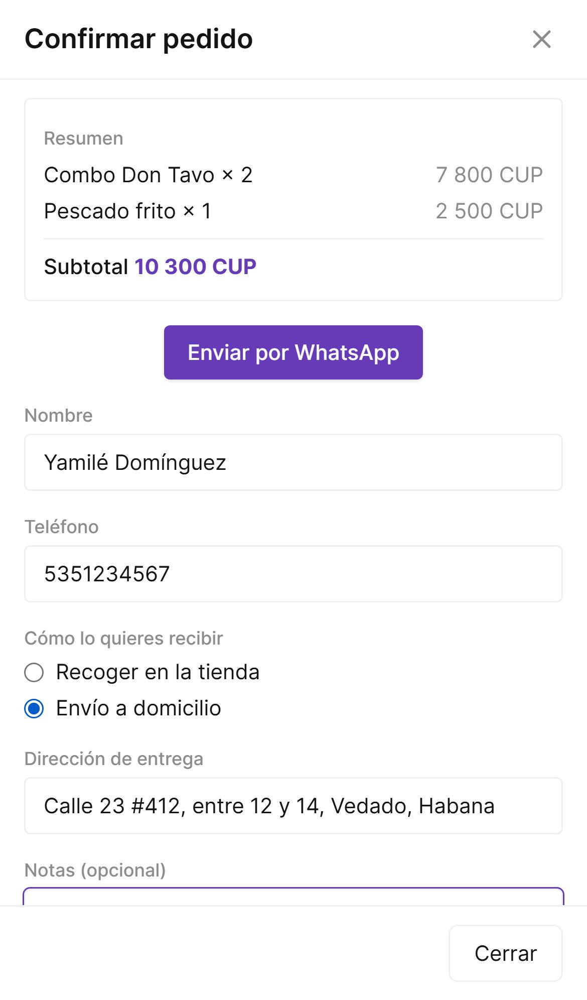
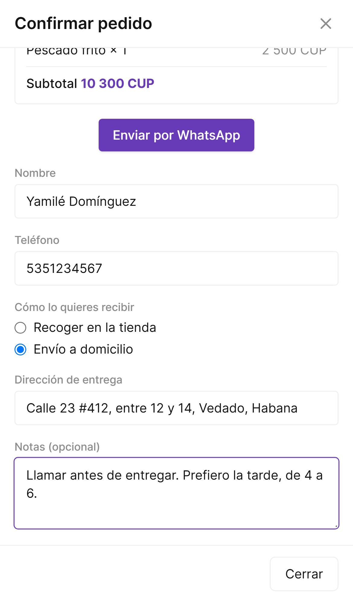
20. Editar los productos del catálogo (descripción e imagen)
Qué es. Completar el detalle que ve el cliente en el catálogo público.
Cómo se hace.
- Dentro de Catálogo Web, expande una categoría.
- En cada producto edita la Descripción (hay un contador de caracteres) y sube su Imagen.
- Verás etiquetas como Sin publicar, Nuevo o Sin guardar según el estado.
- Al terminar, pulsa Guardar cambios (arriba hay un resumen de pendientes).
A tener en cuenta. Hoy, en esta pantalla, se editan la descripción y una imagen por producto; el porcentaje de descuento, el precio rebajado y la galería múltiple no están disponibles aunque la ayuda del menú los mencione. Los cambios se guardan por lotes y lo que falle se queda pendiente para reintentar.
📷 Imagen sugerida. Una categoría expandida con un producto cuyo editor muestra la Descripción y la Imagen, y el resumen de pendientes con Guardar cambios.
21. Configurar los Pedidos WhatsApp
Qué es. Encender el pedido online y decir a dónde llega y cómo se entrega.
Cómo se hace.
- Ve a Ventas → Pedidos WhatsApp (Pedidos WhatsApp). Solo lo ve el Dueño.
- Activa el interruptor Pedidos online. Al encenderlo se muestra el resto.
- Escribe el Número de WhatsApp donde quieres recibir los pedidos (obligatorio).
- Activa Recogida en la tienda y/o Envío a domicilio (al menos una).
- Rellena Horario de atención y Zonas de reparto, y pulsa Sincronizar.
A tener en cuenta. Una tienda nueva arranca con Recogida encendida. El precio y la moneda del pedido salen del catálogo. Si el guardado va bien pero falla la recarga, se te avisa sin perder lo escrito.
📷 Imagen sugerida.
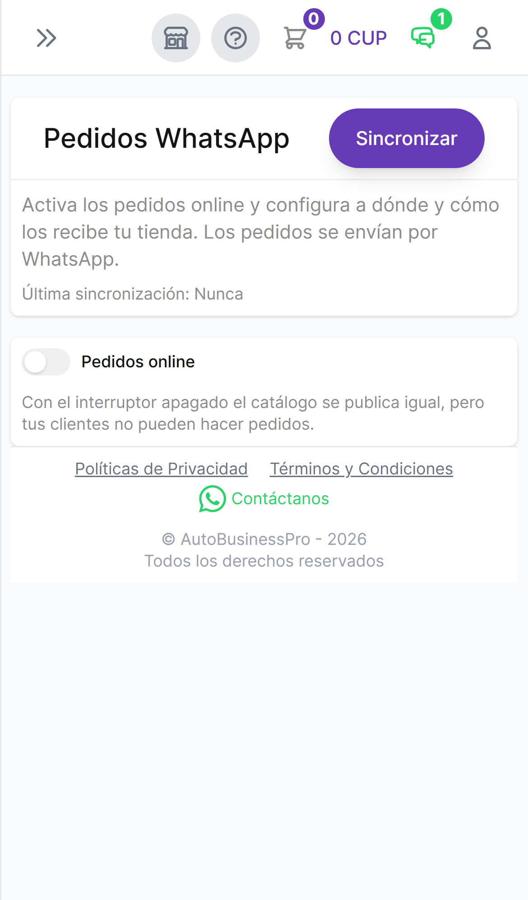
Parte 5 — Gastos, Reportes y Estadísticas
22. Gastos
Qué es. Registrar los gastos operativos del día y consultarlos en el tiempo.
Cómo se hace.
- Gastos del día (Gastos → Gastos del día): pulsa Gasto, elige el Tipo, escribe el Total (mayor que 0), la moneda, el Tipo de pago y una Nota, y guarda.
- Historial (Gastos → Gastos): filtra por rango de fechas, por tipo de pago y por moneda; se agrupa por día.
A tener en cuenta. La fecha la pone el sistema. El historial es solo lectura. Los gastos alimentan el Cuadre del día y las Estadísticas.
📷 Imagen sugerida.
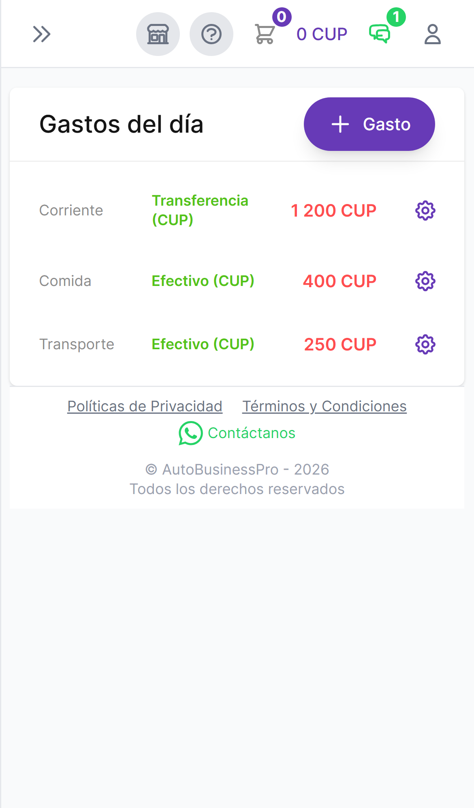
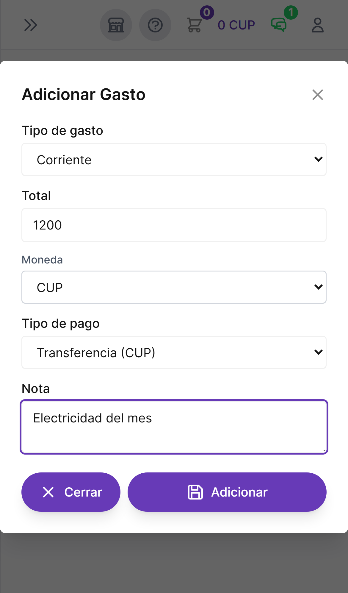
23. Reportes
Qué es. El resumen de ventas del día y la generación de un PDF de inventario a precio de venta.
Cómo se hace.
- Ve a Reportes → Reportes de hoy.
- Revisa las tarjetas: Pedidos, Ingresos, Costo y Ganancia bruta.
- (Opcional) Elige la moneda y pulsa Inventario a precio de venta para descargar el PDF.
A tener en cuenta. El PDF respeta el filtro de moneda (si eliges una, el archivo lleva solo esa moneda; no convierte).
📷 Imagen sugerida.
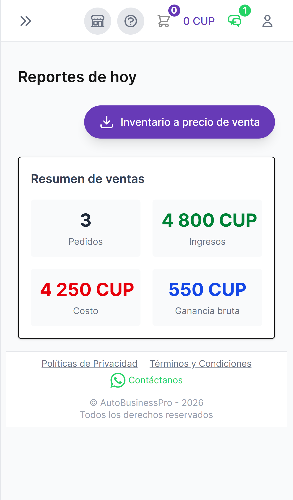
24. Panel de Control
Qué es. El tablero con la evolución del negocio en un rango de fechas.
Cómo se hace.
- Ve a Estadísticas → Dashboard (Panel de Control).
- Elige el rango de fechas (por defecto: los últimos 7 días, terminando ayer).
- Revisa los KPI y las gráficas de Ventas y Ganancia.
A tener en cuenta. Si tienes varias monedas, los importes se muestran por moneda, sin conversión. Las secciones de Gastos y Créditos solo aparecen si esos módulos están activos.
📷 Imagen sugerida.
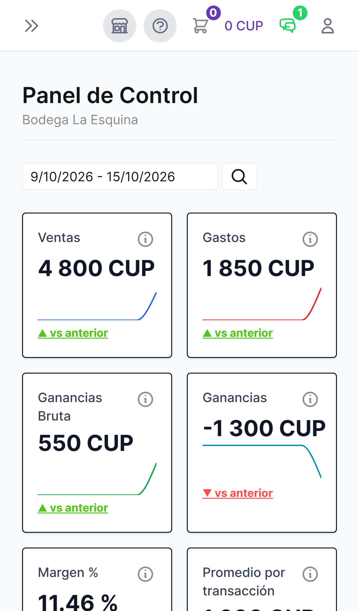
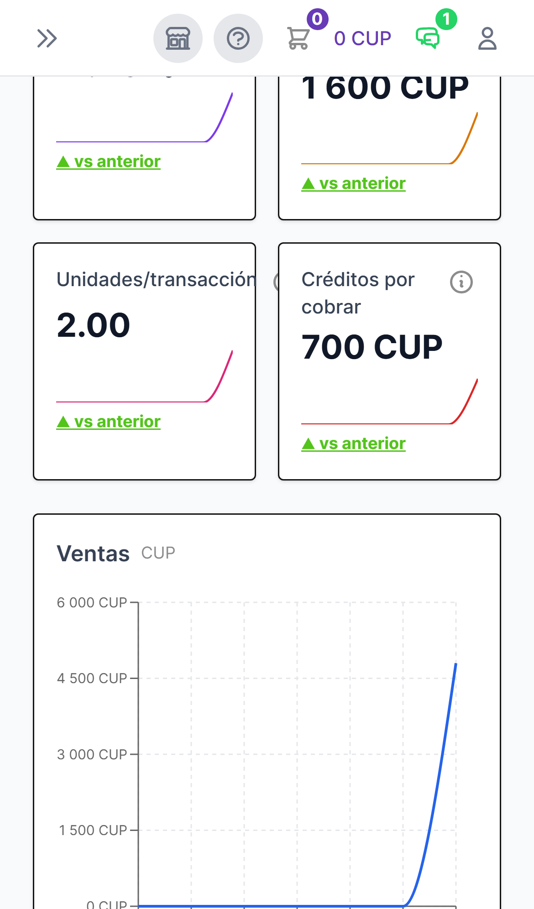
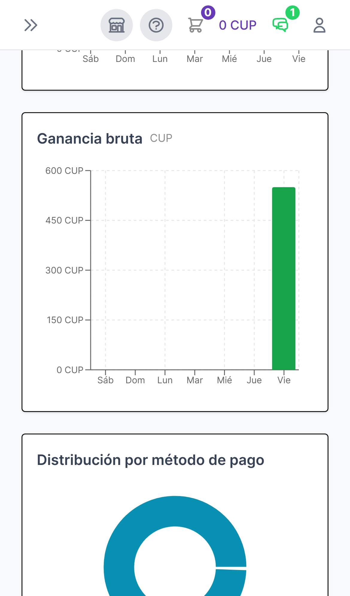
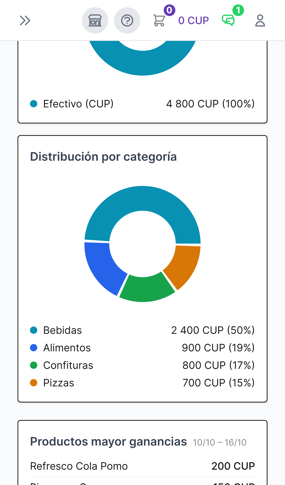
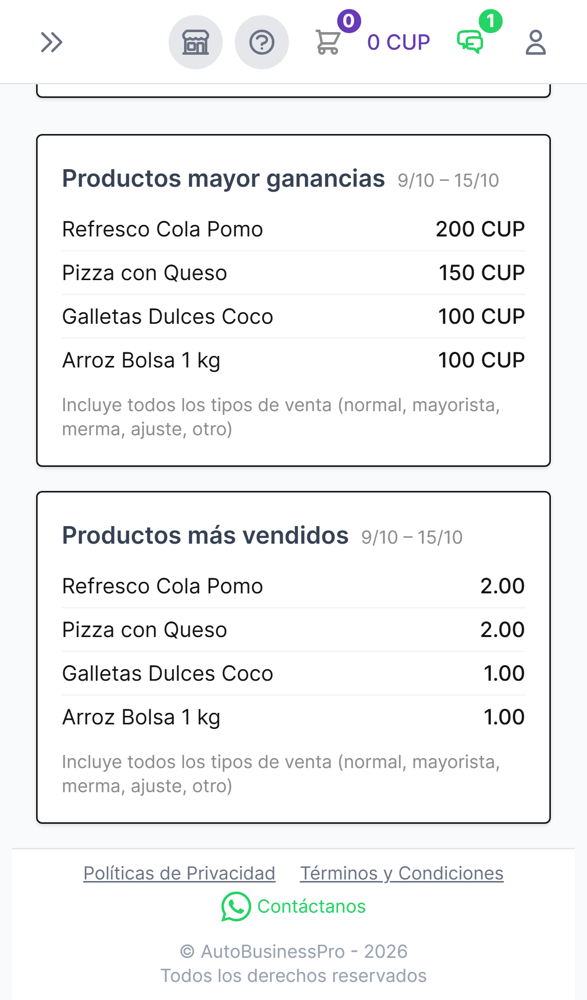
25. Cuadre por fechas
Qué es. El cuadre del periodo: ventas, gastos y ganancias entre dos fechas.
Cómo se hace.
- Ve a Estadísticas → Cuadre por fechas.
- Elige Fecha inicio y Fecha fin y pulsa Generar.
- Revisa los cuatro KPI — Ventas, Gastos, Ganancias Bruta y Ganancias — y la tarjeta Cuadre con sus paneles colapsables.
A tener en cuenta. Ganancias Bruta es la ganancia sin restar gastos; Ganancias es la bruta menos los gastos. La fecha de inicio debe ser anterior o igual a la de fin.
📷 Imagen sugerida.
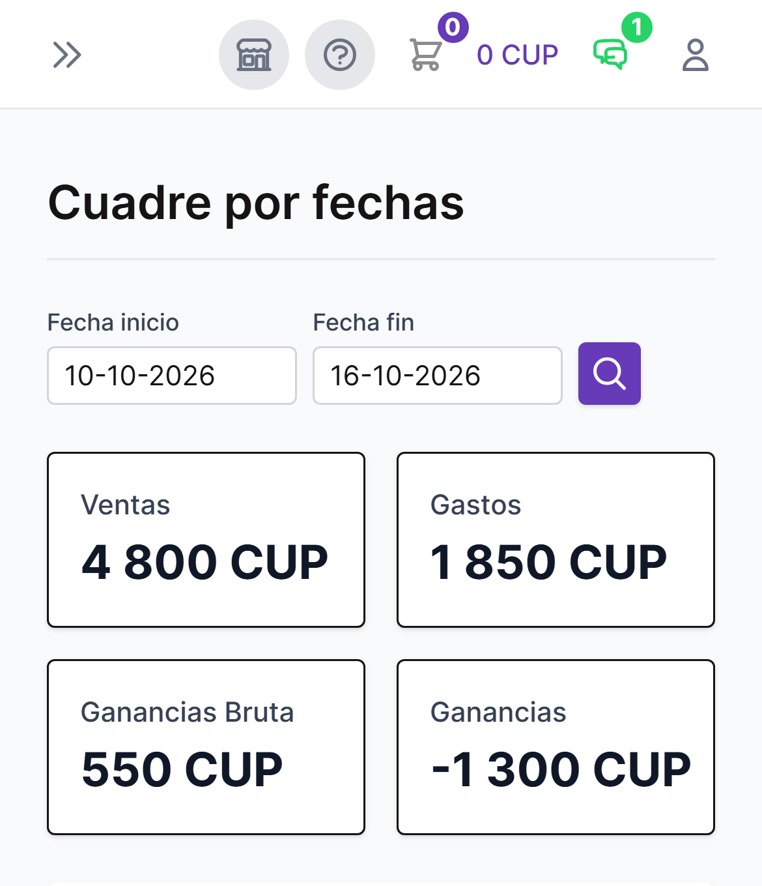
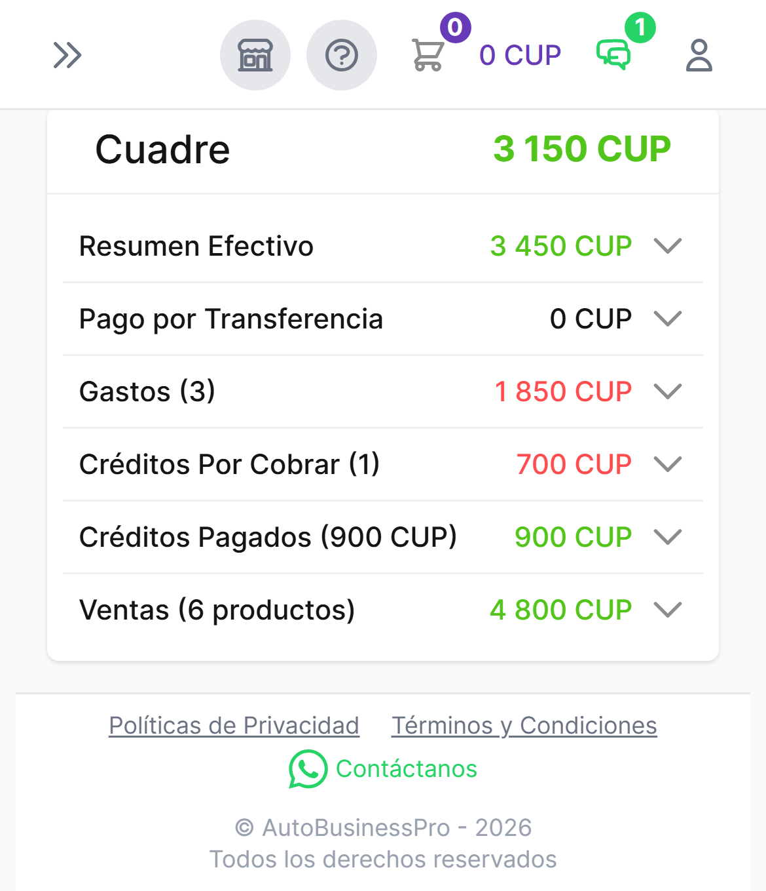
Parte 6 — Configuración y mantenimiento
26. Empleados y roster (resumen)
Ver la sección 6 para crear empleados y la sección 7 para el acceso sin conexión. Recuerda: gestionar empleados necesita conexión, y el roster exportado es lo que habilita el equipo de un empleado para trabajar sin internet.
📷 Imagen sugerida.
27. Tasas de Cambio
Qué es. Registrar cuántas unidades de cada moneda equivalen a 1 USD para cada método de pago. Solo aparece con el módulo de múltiples monedas.
Cómo se hace.
- Ve a Gestión → Tasas de Cambio.
- Pulsa Tasa, elige la moneda y el método, escribe el valor de compra y el valor de venta, y la fecha desde la que rige; pulsa Registrar.
- Consulta Tasas Vigentes (las activas) y el Historial de tasas.
A tener en cuenta. El sistema es append-only: cada cambio crea una fila nueva y las filas históricas no se editan ni se borran. La papelera solo desactiva (la saca del cálculo pero la deja en el historial). USD no aparece en el selector (es la referencia). El método se limita a los válidos para la moneda elegida.
📷 Imagen sugerida.
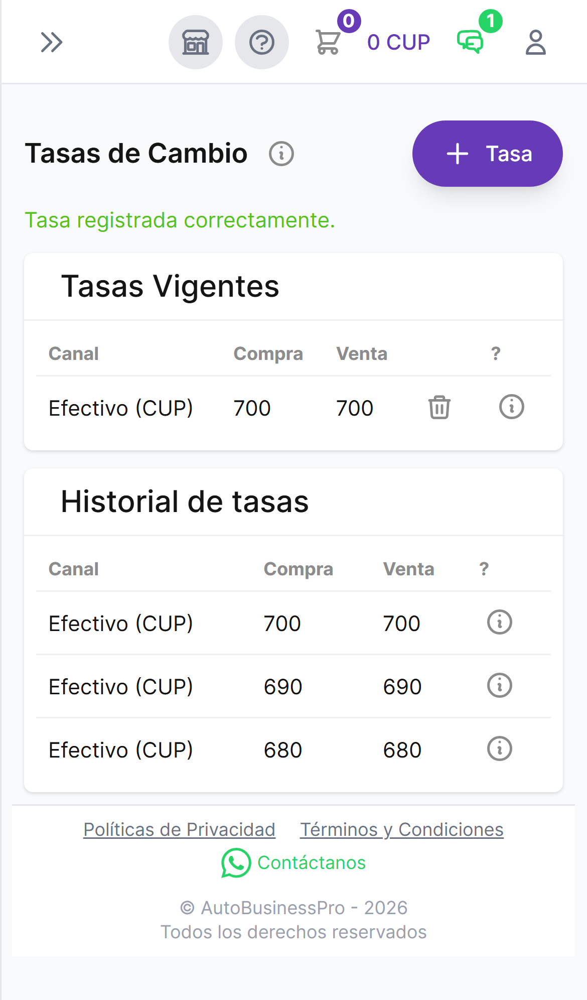
28. Configuraciones
Ver la sección 3 (monedas y métodos de pago). En resumen, esta pantalla ofrece: Tienda activa (solo multi-tienda), Monedas de compra y venta (solo con múltiples monedas) y Métodos de pago. Guarda al instante.
📷 Imagen sugerida.
29. Mis tiendas
Qué es. Ver y gestionar todas tus tiendas (activas e inactivas).
Cómo se hace.
- Ve a Gestión → Mis tiendas.
- Con el engranaje de cada tarjeta puedes Editar (nombre, activar/desactivar) y Editar el plan.
- Si tienes el módulo de multi-tienda, arriba hay un botón para crear una tienda nueva.
A tener en cuenta. Esta pantalla necesita conexión. Al crear una tienda, esta nace en el plan Superior con su catálogo. Desactivar una tienda pide confirmación (puede ser la que tienes en uso).
📷 Imagen sugerida.
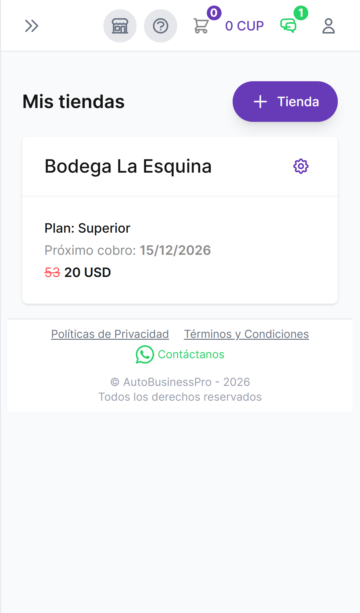
30. Sincronización: exportar e importar
Qué es. Hacer una copia de seguridad cifrada de los datos de la tienda y restaurarla (en el mismo u otro dispositivo).
Cómo se hace — Exportar.
- Ve a Sincronización → Exportar.
- Escribe la Contraseña de cifrado.
- Pulsa Exportar: se descarga un archivo
.zip(o compártelo por hotspot con Compartir).
Cómo se hace — Importar.
- Ve a Sincronización → Importar.
- Elige el Archivo de respaldo (.zip) (o recíbelo por hotspot) y escribe la contraseña.
- Pulsa Importar.
A tener en cuenta. Guarda la contraseña: sin ella el respaldo no se puede abrir. La copia incluye catálogo, inventario, ventas, gastos, créditos, métodos de pago, cierres de efectivo y más. Al importar, los datos se fusionan con los del dispositivo (no se pisa a ciegas).
📷 Imagen sugerida.
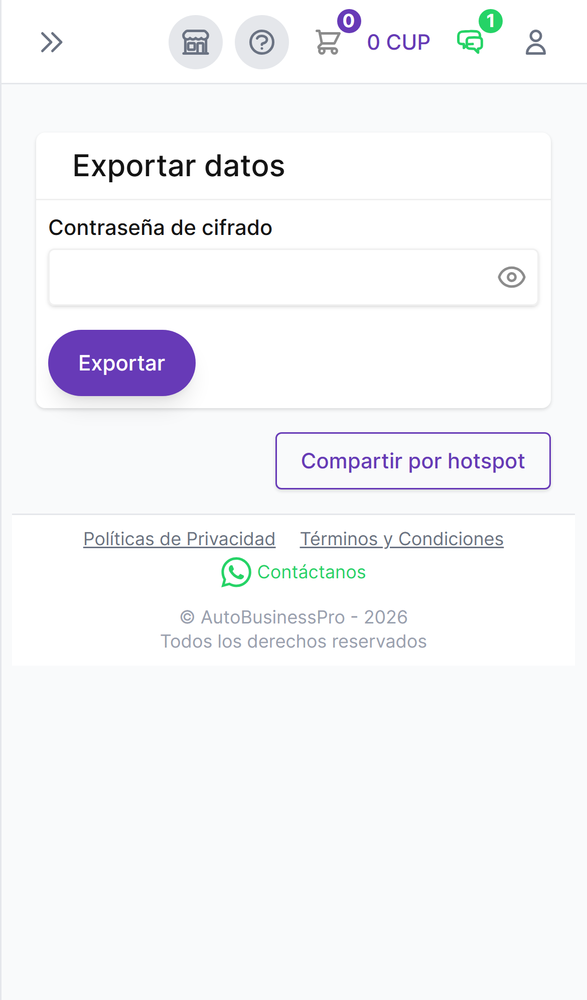
31. Diagnóstico
Qué es. Una pantalla de soporte con el registro de errores y eventos del dispositivo. Solo la ven el Dueño y el administrador de la plataforma.
Cómo se hace.
- Ve a Gestión → Diagnóstico.
- Revisa Información del dispositivo (versión, conexión, navegador).
- Filtra por nivel o busca en la lista; usa Compartir / Descargar / Copiar para enviarlo a soporte y Limpiar para vaciarlo.
A tener en cuenta. Se actualiza solo cada segundo. Es la pantalla que conviene abrir cuando algo falla, para enviar el detalle.
📷 Imagen sugerida.
Anexo — Qué NO cubre este manual
Este manual se limita a los módulos del plan Pago más Catálogo Web, Pedidos WhatsApp y las configuraciones. Quedan fuera: los módulos de Almacenes y Elaboración (plan Superior), las pantallas de Gestión de pedidos (atender los pedidos, repartidores y ventas de pedidos) y todas las pantallas de Administración de la plataforma (SuperAdmin: tiendas, dueños, comercializadores, módulos, cobros y comisiones).
Tutorial: agregar categorías y productos al catálogo del POS
Este tutorial es independiente del resto del manual: empieza desde cero y termina con un producto listo para venderse en el POS. No necesitas leer ninguna otra sección.
Qué vas a lograr. Crear una categoría y, dentro de ella, un producto con su precio y su existencia inicial, de modo que aparezca en Vender y pueda cobrarse.
Cómo leer las imágenes. Cada control que debes tocar está marcado con un círculo rojo y un número rojo. Ese número es el número de paso de este tutorial y se repite en el texto. En cada imagen verás solo los números que corresponden a esa pantalla.
No confundas las marcas con botones. Las marcas del tutorial son círculos rojos finos con un número. Los botones de la aplicación (por ejemplo Limpiar, Importar Productos o Categoría) son formas rellenas con texto; si no llevan número, no son un paso de este tutorial.
Antes de empezar. Necesitas iniciar sesión como Dueño de tienda (o como un empleado con permiso sobre Productos) y tener la tienda seleccionada. En el menú, el catálogo vive en el grupo VENTA.
Categoría y producto, en una frase: la categoría es el grupo (por ejemplo, Alimentos) y el producto es cada artículo que se vende dentro de ese grupo (por ejemplo, Arroz Bolsa 1 kg). No se puede crear un producto sin una categoría.
1. Abrir el catálogo de productos
Paso 1. Toca el botón de la esquina superior izquierda para abrir el menú lateral. Es el botón con la flecha doble (»).
Paso 2. En el menú, dentro del grupo VENTA, toca Catálogo Productos. Se abre la pantalla Productos.
2. Crear la categoría
Paso 3. En la pantalla Productos, toca el botón Categoría (con el signo +) que está en la cabecera de la tarjeta.
Si el catálogo está vacío verás el aviso «Para adicionar un producto debe primero adicionar una categoría»: es normal y desaparece en cuanto crees la primera.
Se abre la ventana Crear categoría, con tres campos y dos botones:
Paso 4. Nombre. Escribe el nombre del grupo. Es el texto que verás en la lista del catálogo y en la pantalla de venta. Ejemplo: Alimentos. Es obligatorio.
Paso 5. Orden. Es la posición de la categoría en la lista: el número menor aparece primero.
Al abrir la ventana viene rellenado con el siguiente número libre, así que normalmente no hay que
tocarlo. Si escribes 1, la categoría se coloca al principio. Es obligatorio.
Paso 6. Activo. Debe quedar marcado. Si lo desmarcas, la categoría se guarda pero queda atenuada en la lista con la etiqueta Inactivo; no se borra y puedes volver a activarla editándola.
Paso 7. Salvar. Toca Salvar para guardar. El botón Cerrar (con la ×) cierra la ventana sin guardar.
Al guardar, la ventana se cierra y la categoría aparece en la lista Productos con un 0 a la derecha: ese número es la cantidad de productos que contiene (todavía ninguno).
3. Abrir el menú de la categoría
Paso 8. Toca el engranaje que está a la derecha del nombre de la categoría (justo antes de la flecha que abre y cierra el grupo). Ese engranaje son las opciones de la categoría y no expande la lista.
Se abre un menú contextual con tres opciones. Esta es la parte que no es evidente: dos de las tres opciones sirven para agregar productos.
Paso 9. Categoría (icono de lápiz). Edita la categoría: vuelve a abrir la ventana del paso 4 para cambiar Nombre, Orden o Activo. No agrega productos.
Paso 10. Productos (icono +). Alta rápida de varios productos a la vez: escribes una lista de nombres y precios y se crean todos dentro de la categoría. Útil para cargar un catálogo largo.
Paso 11. Producto (icono +). Alta individual: abre el formulario completo con todos los campos del producto. Es la opción que usaremos en este tutorial.
4. Crear el producto
Paso 11 (continuación). Toca Producto en el menú contextual. Se abre la ventana Producto. El formulario es largo, así que se muestra en dos imágenes: primero los datos generales y después las casillas y los botones finales.
Paso 12. Nombre. El nombre del artículo tal como lo verás en la lista y en la pantalla de venta. Ejemplo: Arroz Bolsa 1 kg. Es obligatorio.
Paso 13. Precio de costo. Lo que te cuesta a ti una unidad. Es opcional. Si lo rellenas junto con Cantidad, el sistema registra una entrada de inventario del día con ese costo y esa cantidad. Si lo dejas vacío, no se crea ninguna entrada. El costo no cambia el precio de venta. Este campo solo aparece para el Dueño y con el módulo Inventario activo.
Paso 14. Precio. El precio al que vendes una unidad. Es obligatorio y debe ser un número mayor o igual que cero. Es el precio que verás en la lista del catálogo y el que se cobra en el POS.
Paso 15. Moneda del costo. La moneda en la que expresas el Precio de costo. Solo aparece con el módulo MultiMonedas; por defecto trae la moneda de compra configurada en la tienda.
Paso 16. Moneda del precio. La moneda en la que expresas el Precio de venta. Solo aparece con el módulo MultiMonedas. Si cambias primero la moneda del costo, la del precio se ajusta sola la primera vez; después puedes fijarla por separado.
Paso 17. Cantidad. La existencia inicial que tienes de ese producto. Es opcional y admite
decimales (por ejemplo 1.5). Solo crea la entrada de inventario del día si también rellenaste el
Precio de costo y la cantidad es mayor que cero.
Paso 18. Código de barras. El código del producto, si tiene. Es opcional. Puedes escribirlo o tocarlo con el botón del escáner (icono de código de barras) para capturarlo con la cámara.
Paso 19. Orden. La posición del producto dentro de la categoría: el número menor aparece primero. Viene rellenado con el siguiente número libre, así que normalmente no hay que tocarlo.
Paso 20. Venta Mayorista. Es un interruptor opcional, apagado por defecto. Si lo enciendes, aparecen Unidades por paquete/caja, Unidad de medida y los Rangos de precio mayorista (mínimo de paquetes y precio por unidad). Si no vendes al mayor, déjalo apagado.
Paso 21. Activo. Debe quedar marcado. Si lo desmarcas, el producto se guarda pero queda atenuado en la lista con la etiqueta Inactivo y no se puede vender.
Paso 22. Disponible para Vender. Debe quedar marcado. Si lo desmarcas, el producto existe en el catálogo pero no aparece en la pantalla Vender, así que no se puede cobrar.
Paso 23. Descuenta del Inventario. Debe quedar marcado para un producto normal: el POS controla la existencia y la descuenta al vender. Desmárcalo solo para artículos que no llevan inventario (servicios, combos): en ese caso se vende aunque no haya existencia y no descuenta stock.
Paso 24. Salvar. Toca Salvar para guardar el producto. El botón Cerrar (con la ×) cierra sin guardar.
5. Comprobar que quedó listo
Paso 25. La ventana se cierra y el producto aparece dentro de la categoría. Toca el nombre de la categoría (o la flecha de la derecha) para abrir el grupo si está cerrado. Verás el producto con su precio y su engranaje de opciones (para Editar o Desactivar el producto más adelante). El número a la derecha del nombre de la categoría pasa de 0 a 1 (o al total de productos que tenga).
Listo. El producto ya existe en el catálogo del POS: aparece en Vender, se puede agregar al carrito y cobrar, y si marcaste Descuenta del Inventario su existencia se irá descontando con cada venta.
Resumen de los campos
Ventana Crear categoría
| Campo | Qué significa | ¿Obligatorio? |
|---|---|---|
| Nombre | Nombre del grupo que verás en el catálogo y en la venta. | Sí |
| Orden | Posición en la lista; el número menor aparece primero. Viene con el siguiente libre. | Sí |
| Activo | Marcado: la categoría se usa normalmente. Desmarcado: queda atenuada como Inactivo, sin borrarse. | No (marcado por defecto) |
Ventana Producto
| Campo | Qué significa | ¿Obligatorio? |
|---|---|---|
| Nombre | Nombre del artículo en el catálogo y en la venta. | Sí |
| Precio de costo | Lo que te cuesta una unidad. Con Cantidad, genera la entrada de inventario del día. No cambia el precio de venta. | No |
| Precio | Precio de venta por unidad. Es el que se cobra en el POS. | Sí |
| Moneda del costo | Moneda del costo (solo con MultiMonedas). | No |
| Moneda del precio | Moneda del precio de venta (solo con MultiMonedas). | No |
| Cantidad | Existencia inicial; admite decimales. Solo genera entrada si hay costo y es mayor que cero. | No |
| Código de barras | Código del producto; se puede escribir o escanear. | No |
| Orden | Posición dentro de la categoría; el número menor aparece primero. | No |
| Venta Mayorista | Interruptor para configurar paquete/caja, unidad de medida y rangos de precio al mayor. | No (apagado por defecto) |
| Activo | Marcado: el producto se usa normalmente. Desmarcado: queda Inactivo y no se vende. | No (marcado por defecto) |
| Disponible para Vender | Marcado: aparece en Vender. Desmarcado: no se puede cobrar. | No (marcado por defecto) |
| Descuenta del Inventario | Marcado: controla y descuenta existencia al vender. Desmarcado: no controla stock (servicios, combos). | No (marcado por defecto) |
Botones de la pantalla Productos
| Botón | Qué hace |
|---|---|
| Categoría | Crea una categoría nueva (paso 3). |
| Importar Productos | Carga masiva desde un archivo CSV: descarga el ejemplo, rellénalo y súbelo. |
| Importar desde Catálogo Web | Trae al catálogo del POS los productos publicados en el Catálogo Web (solo Dueño y con el módulo activo). |
| Limpiar | Borra los datos del catálogo de este dispositivo (solo Dueño). No lo uses en este tutorial. |
Botones de la ventana Producto
| Botón | Qué hace |
|---|---|
| Cerrar (×) | Cierra la ventana sin guardar nada. |
| Salvar (icono de disquete) | Guarda el producto con los datos escritos. |